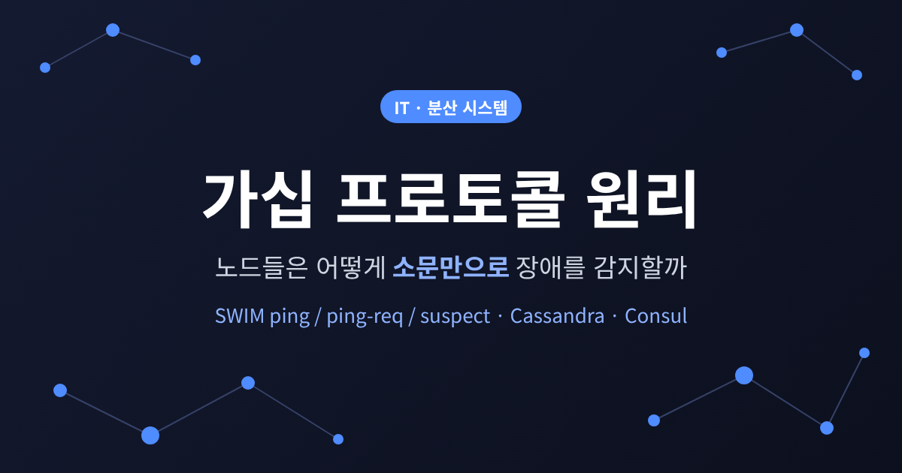
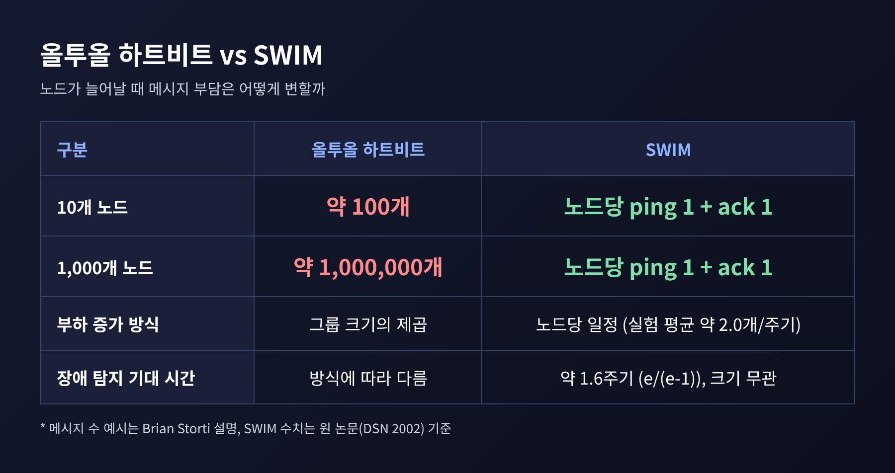
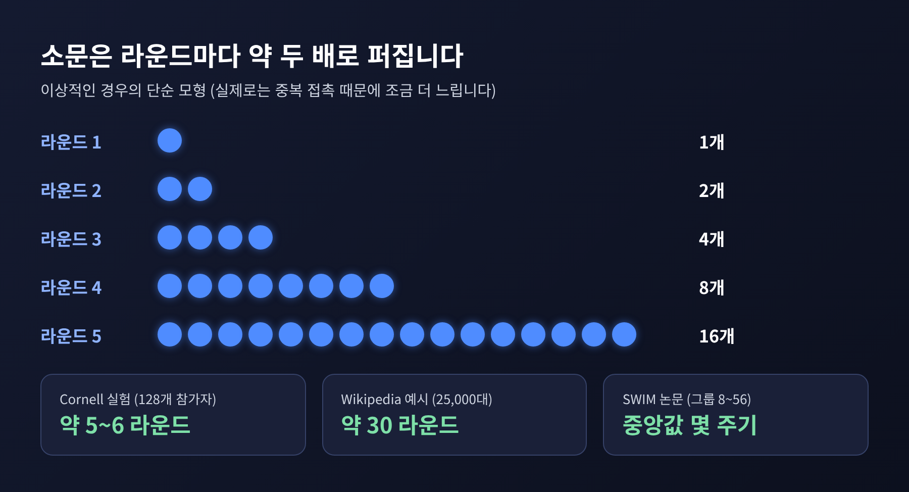
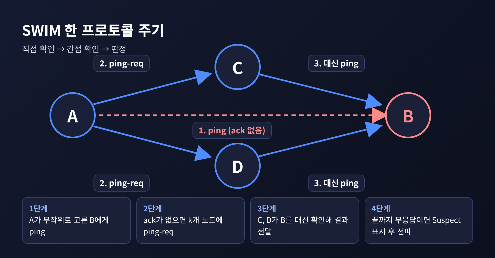
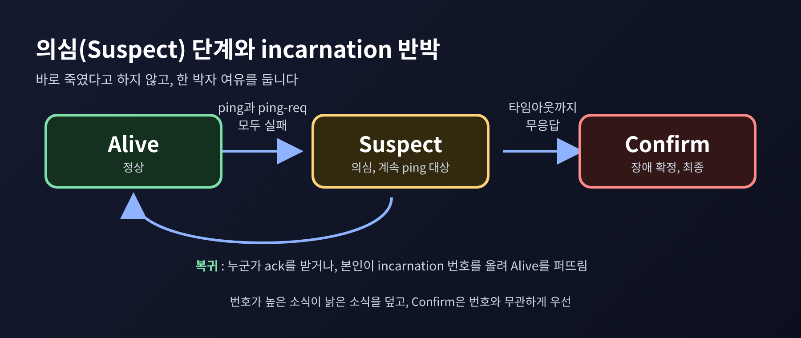
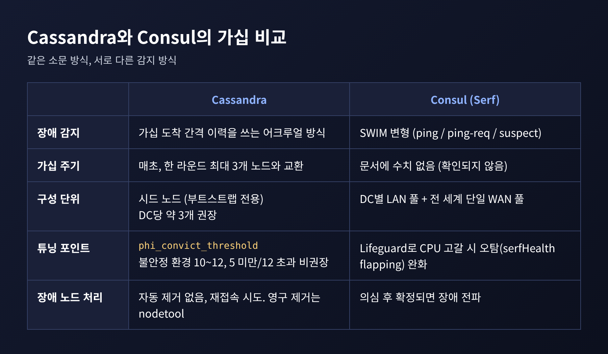
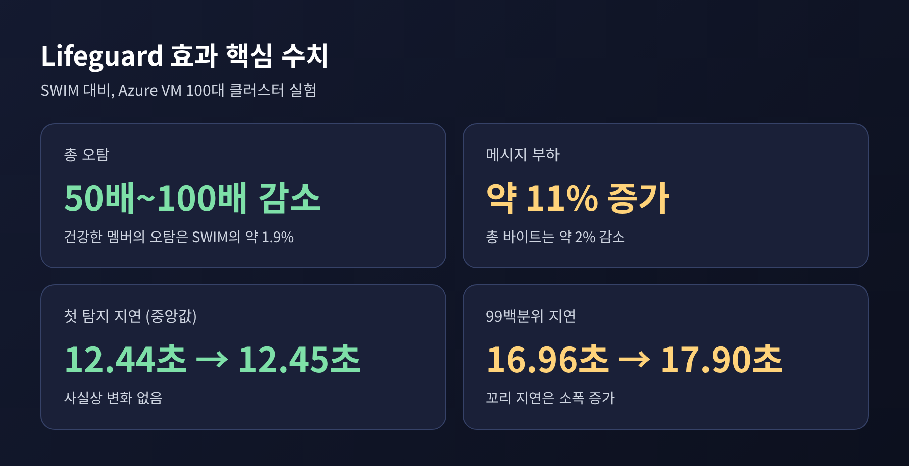

오늘은 가십 프로토콜과 SWIM 장애 감지에 대해 이야기해 보려 합니다. 핵심만 먼저 말씀드리면 이렇습니다. 노드가 서로를 일일이 확인하는 대신, 매 주기마다 무작위로 한 곳만 점검하고 그 결과를 오가는 메시지에 얹어 소문처럼 퍼뜨리는 방식입니다. 이 구조 덕분에 클러스터가 커져도 노드 한 대의 부담은 거의 늘지 않습니다.
서버 여러 대가 하나의 클러스터를 이룰 때, 가장 먼저 필요한 것은 "지금 누가 살아 있는가"를 아는 일입니다. 가장 단순한 답은 하트비트입니다. 모든 노드가 서로에게 "저 살아 있습니다"라는 신호를 정기적으로 보냅니다.
작은 규모에서는 충분합니다. 문제는 숫자가 커질 때입니다.
SWIM 논문은 이 방식이 네트워크 부하를 그룹 크기의 제곱으로 키운다고 지적합니다. 한 개발자의 설명을 빌리면, 노드 10개일 때 약 100개이던 메시지가 노드 1,000개에서는 100만 개 수준이 됩니다. 노드가 100배 늘었는데 부담은 1만 배 늘어나는 셈입니다.

대안이 없었던 것은 아닙니다. 멀티캐스트로 한 번에 뿌리는 방법은 IP 멀티캐스트가 꺼진 환경에서 쓸 수 없습니다. 아마존 VPC가 대표적인 예로 꼽힙니다. 중앙 서버가 하트비트를 받는 방식은 그 서버가 병목이 됩니다. 노드를 고리로 엮는 방식은 여러 대가 동시에 죽을 때 탐지 시간을 예측하기 어렵습니다.
논문이 짚은 근본 원인은 따로 있습니다. 하트비트는 장애 감지와 멤버십 변경 전파라는 서로 다른 두 일을 한 덩어리로 처리한다는 점입니다. SWIM의 출발점이 바로 이 분리입니다.
가십 프로토콜은 전염병이 퍼지는 방식에서 착안한 통신 방법입니다. 각 노드는 주기적으로 무작위 상대를 골라 아는 정보를 주고받습니다. 중앙에서 지휘하는 노드는 없습니다.
소문이 퍼지는 모습을 떠올리면 쉽습니다. 한 사람이 두 사람에게 말하고, 그 두 사람이 각각 다른 사람에게 전합니다. 알고 있는 노드 수는 라운드마다 대략 두 배가 됩니다. 같은 노드를 중복해서 만나는 경우가 생겨 실제로는 이보다 조금 느립니다.
그래서 전체에 퍼지는 시간은 노드 수 N이 아니라 log N에 비례합니다. Wikipedia는 2만 5,000대 규모의 네트워크에서 약 30라운드, 0.1초에 한 번 교환하면 대형 데이터센터를 3초 안팎에 훑을 수 있다는 예를 듭니다. 코넬 대학 연구진의 128개 참가자 실험에서는 전파에 약 5~6라운드가 걸렸습니다. 노드 수를 두 배로 늘려도 필요한 라운드는 한 번쯤 늘 뿐입니다.

물론 아쉬운 점도 있습니다. 가십은 메시지 유실을 전제로 설계되어 있어서, 모든 노드가 같은 시점에 같은 상태를 보리라고 장담하지 않습니다. 주기적으로 도는 방식이라 이벤트가 터진 즉시 알리는 데도 약합니다. 순간순간 노드마다 멤버십 목록이 다를 수 있고, 보장되는 것은 결국 같아진다는 점뿐입니다. 은행 계좌 이체 같은 강한 일관성이 필요한 일에는 어울리지 않습니다.
SWIM은 2002년 Das, Gupta, Motivala가 발표한 프로토콜입니다. 이름에 방식이 담겨 있습니다. 확장 가능하고, 약한 일관성을 허용하며, 감염 방식으로 퍼뜨리는 프로세스 그룹 멤버십 프로토콜입니다.
핵심은 한 주기 동안 노드가 하는 일이 놀랄 만큼 적다는 것입니다.

3번의 간접 확인이 이 프로토콜의 영리한 대목입니다. A와 B 사이의 회선만 일시적으로 막혔을 수 있습니다. 이때 제3의 노드 C가 B에게 닿는다면, B는 죽은 것이 아니라 A의 경로가 나쁜 것입니다. 한 사람의 시선만 믿지 않고 여러 시선을 거치는 구조입니다.
수치로 보면 이 설계의 장점이 분명해집니다. 논문의 분석에 따르면 장애가 난 뒤 어느 정상 노드가 처음 발견하기까지의 기대 시간은 약 1.6 프로토콜 주기(e/(e-1))이고, 그룹 크기와 무관합니다. 노드당 메시지 부하도 주기마다 ping과 ack 한 쌍 정도로 일정합니다. 실험에서 평균 약 2.0개 메시지가 55개 멤버까지 평탄하게 유지되었습니다. 참고로 논문의 실험은 2초 주기, 최대 56개 멤버, 윈도우 2000 환경이라 오늘날의 대규모 환경과는 거리가 있습니다.
타임아웃은 측정한 왕복 시간을 바탕으로 정하며, 프로토콜 주기는 그 추정치의 3배 이상이어야 합니다.
한 번 응답이 없었다고 곧바로 사형 선고를 내리면 오탐이 늘어납니다. 그래서 SWIM에는 중간 단계가 있습니다. 먼저 Suspect(의심) 상태로 표시해 소문을 냅니다. 의심받는 노드는 목록에서 빠지지 않고, 계속 ping 대상으로 남습니다. 누군가 ack를 받으면 다시 Alive로 돌아옵니다. 제한 시간이 지나도록 응답이 없을 때에야 Confirm(장애 확정)이 전파됩니다.
의심받는 쪽도 항변할 수 있습니다. 자신이 의심받는다는 소문을 들으면 incarnation(화신) 번호를 하나 올리고 "나는 살아 있다"를 다시 퍼뜨립니다. 번호가 높은 소식이 낡은 소식을 덮기 때문에, 오래전 의심이 뒤늦게 도착해도 최신 반박이 이깁니다. 반면 Confirm은 번호와 상관없이 우선합니다. 죽었다는 판정은 번복하지 않는 것입니다.

이 장치의 효과는 실험으로 확인됩니다. 논문은 패킷 10%가 유실되는 환경에서 17개 프로세스를 차례로 참가시켰습니다. 의심 단계까지 갖춘 버전은 12개 멤버로 안정되었고, 기본 버전은 2개, 감염 방식만 쓴 버전은 4개에 그쳤습니다. 나머지는 멀쩡한데도 장애로 오판되어 빠진 것입니다.
대가도 있습니다. 의심 단계를 거치는 만큼 진짜 장애를 확정하는 시간은 늘어납니다. 오탐을 줄이는 대신 속도를 내주는 거래입니다.
SWIM의 두 번째 영리함은 전파 방식입니다. 가입, 탈퇴, 장애 같은 변경 소식을 별도 메시지로 뿌리지 않습니다. 이미 오가고 있는 ping, ping-req, ack에 얹어 보냅니다. 추가 패킷이 없는 셈입니다.
각 소식은 정해진 횟수만 얹어 보내고, 한 메시지에 담을 수 있는 양을 넘기면 덜 퍼진 소식을 먼저 싣습니다. 논문 실험에서는 메시지 하나에 최대 6개 업데이트를 담았고, 패킷은 최대 135바이트였습니다. 50개 멤버의 하트비트 목록이 250바이트를 차지하는 것과 대조됩니다. 소식이 모든 멤버에게 닿는 시간은 앞서 본 대로 그룹 크기의 로그로 늘어나며, 실험상 대체로 몇 주기 안이었습니다.
탐지는 가볍게, 전파는 소문에 실어서. 이 분리가 SWIM의 핵심입니다.
실제 시스템은 같은 가십이라도 접근이 다릅니다.

Cassandra는 매초 가십을 돌립니다. 한 라운드에 최대 3개 노드와 자신이 아는 상태를 주고받고, 메시지에 붙은 버전으로 오래된 정보를 최신으로 덮습니다. 장애 감지는 SWIM과 달리 어크루얼 방식입니다. 고정된 시간 한도 대신, 노드별로 가십 도착 간격의 기록을 쌓고 그 이력에 비춰 지금 침묵이 이상한지 계산합니다. 민감도는 phi_convict_threshold로 조절하며, 불안정한 아마존 EC2 같은 환경에서는 10이나 12로 올리라고 공식 문서가 안내합니다. 12를 넘거나 5 미만으로 두는 것은 권하지 않습니다.
새 노드가 클러스터를 처음 찾을 때 길잡이가 되는 것이 시드 노드입니다. 이름과 달리 특별한 권한은 없고 단일 장애점도 아닙니다. 데이터센터마다 약 세 개 정도로 작게 유지하고, 모든 노드를 시드로 만들지 않는 편이 좋다고 문서는 말합니다. 또 하나 눈여겨볼 점이 있습니다. Cassandra는 장애가 의심된 노드를 곧바로 링에서 내보내지 않습니다. 일시적 장애가 많다고 보고 주기적으로 재접속을 시도하며, 영구 제거는 nodetool로 사람이 결정합니다.
Consul은 내장된 Serf 라이브러리로 SWIM을 변형해 씁니다. 데이터센터마다 클라이언트와 서버를 모두 담는 LAN 풀이 하나 있고, 모든 서버가 참가하는 전 세계 단일 WAN 풀이 있습니다. 덕분에 장애 감지가 소수 서버에 몰리지 않고 클러스터 전체로 분산됩니다.
그렇다면 SWIM은 완벽할까요. 그렇지 않습니다.
SWIM은 감시하는 노드 자신이 건강하다고 가정합니다. 패킷을 거의 실시간으로 처리할 수 있어야 한다는 전제입니다. CPU나 네트워크가 바닥나 있으면 이야기가 달라집니다. 느려진 노드가 정상 노드의 응답을 제때 못 읽고 "저쪽이 죽었다"고 소문을 내는 것입니다. Consul에서는 이 현상이 serfHealth 체크가 오락가락하는 형태로 나타납니다.
HashiCorp 연구진이 내놓은 해법이 Lifeguard입니다. 세 가지 장치로 이루어집니다.

논문 수치는 인상적입니다. Azure VM 100대 중 일부에 CPU 부하를 걸어 시험한 결과, 오탐이 50배에서 100배 줄었습니다. 메시지는 약 11% 늘었고, 첫 탐지 지연의 중앙값은 SWIM 12.44초에 Lifeguard 12.45초로 거의 같았습니다. 지연이 완전히 공짜는 아닙니다. 99백분위는 16.96초에서 17.90초로 올랐습니다.
한계는 남습니다. 앞서 말한 대로 가십은 모든 노드의 일치를 즉시 보장하지 않습니다. 의심 단계는 속도를 늦추고, 라운드 로빈 방식으로 탐지 시간의 상한을 정해도 최악의 경우 시간은 노드 수에 비례해 커집니다. 논문은 이 상한을 그룹 크기의 두 배 주기 이내라고 설명합니다.
정리하면 이렇습니다. 하트비트는 모두가 모두를 확인하느라 규모에 짓눌리고, SWIM은 한 번에 한 곳만 보고 나머지는 소문에 맡깁니다. 의심이라는 한 박자의 여유와 incarnation이라는 반박의 권리가 오탐을 줄여 줍니다.
"모두를 확인하지 않아도, 모두가 알게 된다."
다음에 Cassandra나 Consul 클러스터에서 노드가 잠깐 의심받다가 돌아오는 로그를 보신다면, 그 뒤에서 조용히 오가는 소문을 한번 떠올려 보시길 권합니다.